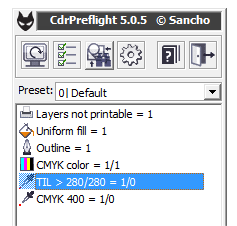
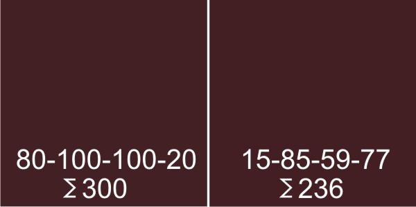

Суммарное покрытие краской
zmeiy / 04.02.2011, 14:50/00:41
Форум:
Подскажите плиз, существует ли в кореле настройка ограничения суммарного покрытия краской надо к примеру не более 270%
Подскажите плиз, существует ли в кореле настройка ограничения суммарного покрытия краской надо к примеру не более 270%
Именно настройка ограничения — нет.
Однако, такое ограничение задано в цветовых профилях. В Х5 достаточно конвертировать документ в НУЖНЫЙ профиль, и излишки обрежутся автоматом. В предыдущих версиях такой трюк не получится.
Ещё есть возможность поиска превышения TIL через мой макрос

Но поиск производится только в векторных объектах.
Спасибо большое за ответ. Все понятно. Попробую ваш макрос посмотреть еще. Жаль конечно что только в векторных, как правило превышение как раз на фото получается.
http://webfile.ru/placed?id=5110592
это операция для фотошопа.
http://cdrpro.ru/news/2009-08-18-162
а это для взаимодействия корела с фотошопом.
Интересный вариант, только что то с фотошопом не разобрался. Я так понимаю этот акшин должен на выходе создать копию файла с измененными параметрами суммарного покрытия, а у меня выделяет область с покрытием и все. Чего дальше делать не подскажите ламеру?
У меня есть TILы, которые при нажатии клавиши равняют суммарное покрытие до какого-то определённого. Единственный минус — цветокоррекция ведётся относительно самой тёмной точки.
Т.е. если состав цвета в тёмных областях (допустим 300), а надо 270, при нажатии клавиши будет 270, но и остальные цвета станут бледнее.
Если надо убить двух зайцев: получить 270 и сохранить яркие цвета, то что я предложил оптимальный вариант.
Я дальше, области которые выделятся — уровнями, кривыми провожу цветокоррекцию.
Меняю состав цвета увеличивая чёрный и уменьшая остальное.
Только не торопись, лучше провести это в несколько заходов.
• запустил TIL — уменьшил уровень — снял выделение — запустил TIL и т.д.
С каждым разом область выделения будет всё меньше и меньше, а потом пропадёт.
P.S. Ещё книжка хорошая есть по цветокоррекции — Дена Маргулиса.
А почему не катит вариант конвертации в нужный профиль? Это же в разы быстрее и вся работа по коррекции цвета делается автоматом. :)
да санчо прав через профайл удобнее и быстрее. а вот подскажите уважаемый санчо как отредактировать имеющийся профайл, чтобы в нем изменить только суммарное покрытие?
Да, есть TIL, который делает всё автоматом, но при этом страдают и те участки, на которых суммарное покрытие не превышает допустимого.
Это скорее не коррекция, а глушение.
К примеру: на тёмных участках с оттенком красного можно убрать циан и добавить чёрного. Циан, по идее, не должен участвовать в цветообразовании красного.

Автомат этого не сделает. Он тупо убавит каждого цвета по чуть-чуть.
Может я не прав, но если всё доверять автоматам — восстание машин неизбежно!
sergey, ага, мы все знаем твою "любовь" к автоматизации. Однако есть такой момент как целесообразность. Можно строить из себя крутого цветокорректора (это я в общем), а можно просто понимать что кроме тебя это ни кому не надо, ни кто не заметит и не оценит. Конечному зрителю печатной продукции глубоко фиолетово какой там оттенок, его интересует информация и только. А разницу в сколько то там процентов увидишь только ты, а всем остальным будет плевать :)
zmeiy, хз, никогда этим не забивал свою голову. Погугли, Гугл знает почти всё :)
zmeiy,
Настройки цветового профиля, в том числе сумму красок, можно изменить с помощью фотошопа - Edit - Color Setting - в окошке CMYK (там уже стоит какой-нибудь умолчательный профиль для американских настроек печати, поэтому если для русской полиграфии то выбери euroscale coated/uncoated, т.е. меловка/офсет) - после этого там же Custom CMYK - выбери UCR Light, Total ink (т.е сумма красок), жмешь ок. В этом же окошке CMYK выбираешь сейв CMYK - сохраняешь icc-профиль куда надо и пользуешься им.
Если в кореле - подгрузи этот смук-профиль. Но! Особенность корела заключается в том, что конвертить по этому профилю он будет только rgb и др объекты, а смук (даже если в нем 400%) оставит без изменения. В таких случаях обычно помогает двойная конвертация растра сначала в rgb, а потом снова в смук.
Sancho, не вопрос, а скорее пожелание. Почему в Кореле до сих пор отсутствует функция показа участков (векторных и растровых), где сумма красок превышает интересующую величину? Я имею ввиду функцию подобную той что есть в акробате и в индизе.
Страницы